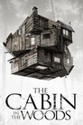

The Hitchhiker's Guide to the Galaxy
released: 2005-04-29 -
Adventure, Comedy, Science Fiction, Family
13-04-2014
Mere seconds before the Earth is to be demolished by an alien construction crew, Arthur Dent is swept off the planet by his friend Ford Prefect, a researcher penning a new edition of "The Hitchhiker's Guide to the Galaxy."
WALL·E
released: 2008-06-22 -
Animation, Family
13-04-2014
WALL-E is the last robot left on an Earth that has been overrun with garbage and all humans have fled to outer space. For 700 years he has continued to try and clean up the mess, but has developed some rather interesting human-like qualities. When a ship arrives with a sleek new type of robot, Wall-E thinks he's finally found a friend and stows away on the ship when it leaves.
Star Wars: Episode VI - Return of the Jedi
released: 1983-05-25 -
Action, Adventure, Science Fiction
13-04-2014
As Rebel leaders map their strategy for an all-out attack on the Emperor's newer, bigger -- and dreaded --Death Star. Han Solo remains frozen in the cavernous desert fortress of Jabba the Hutt, the most loathsome outlaw in the universe, who is also keeping Princess Leia as a slave girl.Now a master of the Force, Luke Skywalker rescues his friends, but he cannot become a true Jedi Knight until he wages his own crucial battle against Darth Vader, who has sworn to win Luke over to the Dark side of the Force.
Nightmares & Dreamscapes: From the Stories of Stephen King
released: 2006-01-01 -
Drama, Fantasy, Horror
13-04-2014
A television mini-series adaptation of Nightmares and Dreamscapes, Stephen King's collection of short horror stories.
When in Rome
released: 2010-01-29 -
Comedy, Romance
13-04-2014
After fishing out coins from a water fountain in Italy, cynical New Yorker Beth Harper finds herself being wooed by several ardent suitors. As she deals with the attention, Beth tries to figure out whether a charming reporter really loves her.
Dr. Horrible's Sing-Along Blog
released: 2008-07-15 -
Action, Adventure, Comedy, Music, Science Fiction
13-04-2014
Dr. Horrible, an aspiring supervillain with his own video blog, is attempting to join the prestigious Evil League of Evil (led by the legendary "thoroughbred of sin", Bad Horse), but his plans are usually foiled by the egotistical superhero Captain Hammer. Dr. Horrible's life is thrown for a loop when he falls in love with Penny, a beautiful and optimistic advocate for the homeless he meets at the laundromat.
Starship Troopers : Invasion
released: 2012-07-21 -
Action, Animation, Science Fiction, Thriller
13-04-2014
A distant Federation outpost Fort Casey comes under attack by bugs. The team on the fast attack ship Alesia is assigned to help the Starship John A. Warden stationed in Fort Casey evacuate along with the survivors and bring military intelligence safely back to Earth. Carl Jenkins, now ministry of Paranormal Warfare, takes the starship on a clandestine mission before its rendezvous with the Alesia and goes missing in the nebula. Now, the battle-hardened troopers are charged with a rescue mission that may lead to a much more sinister consequence than they ever could have imagined....
New
released: 2004-07-16 -
Comedy, Drama
13-04-2014
It is the Tamil remake of 'Big'. SJ Suryah is a young man with an immature mind. He falls in love with Simran and gets married to her. The troubles that they encounter form the story.
Hellboy II: The Golden Army
released: 2008-07-10 -
Adventure, Fantasy, Science Fiction
13-04-2014
In this continuation to the adventure of the demon superhero, an evil elf breaks an ancient pact between humans and creatures, as he declares war against humanity. He is on a mission to release The Golden Army, a deadly group of fighting machines that can destroy the human race. As Hell on Earth is ready to erupt, Hellboy and his crew set out to defeat the evil prince.
G-Force
released: 2009-07-21 -
Action, Adventure, Animation, Family
13-04-2014
A team of trained secret agent animals, guinea pigs Darwin, Juarez, Blaster, mole Speckles, and fly Mooch takes on a mission for the US government to stop evil Leonard Saber, who plans to destroy the world with household appliances. But the government shuts them down and they are sentenced to a pet shop. Can they escape to defeat the villain and save the world?
The Men Who Stare at Goats
released: 2009-11-05 -
Comedy, War
13-04-2014
A reporter in Iraq might just have the story of a lifetime when he meets Lyn Cassady, a guy who claims to be a former member of the U.S. Army's New Earth Army, a unit that employs paranormal powers in their missions.
Brooklyn's Finest
released: 2009-01-16 -
Action, Adventure, Crime, Drama, Thriller
13-04-2014
Brooklyn's Finest takes place within the notoriously rough Brownsville section of the city and especially within the Van Dyke housing projects in the NYPD's sixty-fifth precinct. Three policemen struggle with the sometimes fine line between right and wrong.
Sounds Like Teen Spirit
released: 2008-09-09 -
Documentary, Music
13-04-2014
A 2008 documentary and debut feature film of Bafta-Award nominated director Jamie Jay Johnson. It follows the lives of the participants of the Junior Eurovision Song Contest 2007, specifically the entrants from Belgium, Bulgaria, Cyprus and Georgia. The film sees them proceed from the national finals that saw them crowned the representatives of their country through to the international song festival itself held in Rotterdam, the Netherlands where they each compete against 16 other acts.
Burn After Reading
released: 2008-09-12 -
Comedy, Drama
13-04-2014
This is comedic tale of espionage. An ousted CIA official's memoir accidentally falls into the hands of two unwise gym employees intent on exploiting their find.
Starship Troopers : Invasion
released: 2012-07-21 -
Action, Animation, Science Fiction, Thriller
13-04-2014
A distant Federation outpost Fort Casey comes under attack by bugs. The team on the fast attack ship Alesia is assigned to help the Starship John A. Warden stationed in Fort Casey evacuate along with the survivors and bring military intelligence safely back to Earth. Carl Jenkins, now ministry of Paranormal Warfare, takes the starship on a clandestine mission before its rendezvous with the Alesia and goes missing in the nebula. Now, the battle-hardened troopers are charged with a rescue mission that may lead to a much more sinister consequence than they ever could have imagined....
My Bloody Valentine 3D
released: 2009-01-16 -
Horror, Thriller
13-04-2014
Ten years ago, a tragedy changed the town of Harmony forever. Tom Hanniger, an inexperienced coal miner, caused an accident in the tunnels that trapped and killed five men and sent the only survivor, Harry Warden, into a permanent coma. But Harry Warden wanted revenge. Exactly one year later, on Valentine’s Day, he woke up…and brutally murdered twenty-two people with a pickaxe before being killed.
Battle For Haditha
released: 2007-09-11 -
Action, Adventure, Drama, History, War, Indie
13-04-2014
An investigation of the massacre of 24 men, women and children in Haditha, Iraq allegedly shot by 4 U.S. Marines in retaliation for the death of a U.S. Marine killed by a roadside bomb. The movie follows the story of the Marines of Kilo Company, an Iraqi family, and the insurgents who plant the roadside bomb.
Sex Drive
released: 2008-10-17 -
Adventure, Comedy, Romance
13-04-2014
A high school senior drives cross-country with his best friends to hook up with a babe he met online.
The Unborn
released: 2009-01-09 -
Horror, Mystery, Thriller
13-04-2014
A young woman fights the spirit that is slowly taking possession of her.
The Bounty Hunter
released: 2010-03-19 -
Action
13-04-2014
Milo Boyd is a bounty hunter whose latest gig is rather satisfying, as he finds out that the bail-skipper he must chase down is his own ex-wife, Nicole -- but she has no intention of getting nabbed without a fight. Complicating matters, Nicole's wannabe-boyfriend, Stewart, joins the chase.
Killers
released: 2010-06-04 -
Action, Comedy, Thriller, Romance
13-04-2014
When an elite assassin marries a beautiful computer whiz after a whirlwind romance, he gives up the gun and settles down with his new bride. That is, until he learns that someone from his past has put a contract out on his life.
Sherlock Holmes
released: 2009-12-25 -
Action, Adventure, Comedy, Crime, Drama, Mystery, Thriller
13-04-2014
Eccentric consulting detective Sherlock Holmes and Doctor John Watson battle to bring down a new nemesis and unravel a deadly plot that could destroy England.
A Midsummer Night's Dream
released: 1999-04-25 -
Comedy, Drama, Fantasy, Romance
13-04-2014
Shakespeare's comedy about two couples in love with the wrong partners, and how they are finally brought together rightly, thanks in part to the bungling work of Puck. It is completely in the language of the Bard, with Pfeiffer as the Fairy Queen and Kline as the one turned into her evening's lover with donkey ears.
Star Wars: Episode IV - A New Hope
released: 1977-05-25 -
Action, Adventure, Science Fiction
13-04-2014
Princess Leia is captured and held hostage by the evil Imperial forces in their effort to take over the galactic Empire. Venturesome Luke Skywalker and dashing captain Han Solo team together with the loveable robot duo R2-D2 and C-3PO to rescue the beautiful princess and restore peace and justice in the Empire.
Star Wars: Episode I - The Phantom Menace
released: 1999-05-19 -
Action, Adventure, Science Fiction
13-04-2014
(32 Years Before Episode IV) Stranded on the desert planet Tatooine after rescuing young Queen Amidala from the impending invasion of Naboo, Jedi apprentice Obi-Wan Kenobi and his Jedi Master discover nine-year-old Anakin Skywalker, a young slave unusually strong in the Force.
Star Wars: Episode III - Revenge of the Sith
released: 2005-05-19 -
Action, Adventure, Science Fiction
13-04-2014
(19 Years before Episode IV) Three years after the onset of the Clone Wars, the Jedi Knights have been leading the clone army into a galaxy-wide war against the Separatists. Only by embracing the Dark Side can Anakin Skywalker end the war and -- He believes -- Save the woman he loves.
Star Wars: Episode II - Attack of the Clones
released: 2002-05-16 -
Action, Adventure, Science Fiction
13-04-2014
(22 Years Before Episode IV) Ten years after the events of the Battle of Naboo, the galaxy has undergone significant changes. Anakin Skywalker and Obi-Wan Kenobi are assigned to protect Padmé from political separatists. As relationships form and powerful forces collide, these heroes face choices that will impact the destiny of the Republic.
Star Wars: Episode V - The Empire Strikes Back
released: 1980-05-21 -
Action, Adventure, Science Fiction
13-04-2014
The epic saga continues as Luke Skywalker, in hopes of defeating the evil Galactic Empire, learns the ways of the Jedi from aging master Yoda. But Darth Vader is more determined than ever to capture Luke. Meanwhile, rebel leader Princess Leia, cocky Han Solo, Chewbacca, and droids C-3PO and R2-D2 are thrown into various stages of capture, betrayal and despair.
It
released: 1990-11-18 -
Drama, Horror
13-04-2014
A series of murders prompts Mike Hanlon to suspect that the supernatural menace that he and a group of friends battled as children has returned. He begins to call his friends to remind them of the oath they swore: if It returned again, they would come back to Derry to do battle again.
The Adjustment Bureau
released: 2011-03-04 -
Fantasy, Thriller, Romance
13-04-2014
A man glimpses the future Fate has planned for him – and chooses to fight for his own destiny. Battling the powerful Adjustment Bureau across, under and through the streets of New York, he risks his destined greatness to be with the only woman he's ever loved.
She's Out of My League
released: 2010-03-12 -
Comedy, Romance
13-04-2014
When he starts dating drop-dead gorgeous Molly, insecure airport security agent Kirk can't believe it. As his friends and family share their doubts about the relationship lasting, Kirk does everything he can to avoid losing Molly forever.
Priest
released: 2011-05-13 -
Action, Horror, Science Fiction, Thriller
13-04-2014
In an alternate world, humanity and vampires have warred for centuries. After the last Vampire War, the veteran Warrior Priest lives in obscurity with other humans inside one of the Church's walled cities. When the Priest's niece is kidnapped by vampires, the Priest breaks his vows to hunt them down. He is accompanied by the niece's boyfriend, who is a wasteland sheriff, and a former Warrior Priestess.
Lesbian Vampire Killers
released: 2009-04-20 -
Comedy, Horror
13-04-2014
With their women having been enslaved by a pack of lesbian vampires, the remaining menfolk of a rural town send two hapless young lads out onto the moors as a sacrifice.
I Love You Phillip Morris
released: 2009-01-18 -
Action, Comedy, Drama, Romance
13-04-2014
Bad Santa co-screenwriters Glenn Ficara and John Requa re-team for this fact-based black comedy starring Jim Carrey as a Virginia police officer-turned-con man who makes the leap to white-collar criminal after being sent to prison and falling in love with his sensitive cellmate. Steve Russell (Carrey) is a small-town cop. Bored with his bland lifestyle, Russell turns to fraud as a means of shaking things up. Before long, Russell's criminal antics have landed him behind bars, where he encounters the charismatic Phillip Morris (Ewan McGregor). Smitten, Russell devotes his entire life to being with Morris regardless of the consequences.
Hanna
released: 2011-04-08 -
Action, Adventure, Thriller
13-04-2014
A 16-year-old girl raised by her father to be the perfect assassin is dispatched on a mission across Europe. Tracked by a ruthless operatives, she faces startling revelations about her existence and questions about her humanity.
Devil
released: 2010-09-17 -
Horror, Mystery, Thriller
13-04-2014
A group of people trapped in a elevator realize that the devil is among them.
Sweeney Todd: The Demon Barber of Fleet Street
released: 2007-12-20 -
Drama, Horror, Music
13-04-2014
The infamous story of Benjamin Barker, a.k.a Sweeney Todd, who sets up a barber shop down in London which is the basis for a sinister partnership with his fellow tenant, Mrs. Lovett. Based on the hit Broadway musical.
2012
released: 2009-10-10 -
Disaster
13-04-2014
Dr. Adrian Helmsley, part of a worldwide geophysical team investigating the effect on the earth of radiation from unprecedented solar storms, learns that the earth's core is heating up. He warns U.S. President Thomas Wilson that the crust of the earth is becoming unstable and that without proper preparations for saving a fraction of the world's population, the entire race is doomed. Meanwhile, writer Jackson Curtis stumbles on the same information. While the world's leaders race to build "arks" to escape the impending cataclysm, Curtis struggles to find a way to save his family. Meanwhile, volcanic eruptions and earthquakes of unprecedented strength wreak havoc around the world.
In the Blood
released: 2014-04-04 -
Action, Crime, Thriller
08-04-2014
When her husband goes missing during their Caribbean vacation, a woman sets off on her own to take down the men she thinks are responsible.
Pain & Gain
released: 2013-04-26 -
Action, Comedy, Crime, Drama
08-04-2014
Based on the true story of Daniel Lugo (Mark Wahlberg) a Miami bodybuilder who wants to live the American dream. He would like to have the money that other people have. So he enlists the help of fellow bodybuilder Adrian Doorbal (Anthony Mackie) and ex-convict, Christian bodybuilder Paul Doyle (Dwayne Johnson). Their kidnapping and extortion scheme goes terribly wrong since they have muscles for brains and they're left to haphazardly try to hold onto the elusive American dream.

Veronica Mars
released: 2014-03-14 -
Comedy, Crime, Drama
08-04-2014
Years after walking away from her past as a teenage private eye, Veronica Mars gets pulled back to her hometown - just in time for her high school reunion - in order to help her old flame Logan Echolls, who's embroiled in a murder mystery.
Bad Country
released: 2014-03-10 -
Action, Crime, Drama
08-04-2014
Inspired by real events, BAD COUNTRY is a gritty Louisiana set crime drama. Detective Bud Carter's investigations lead to the arrest of Jesse Weiland, a contract killer from a criminal syndicate. Weiland, facing life in prison and losing his family, puts his trust in Carter and becomes an informant. The case attracts the FBI, who in turn, wrestles control from Carter. When a sting goes bad, the syndicate boss, Lutin Adams uses crooked politicians and lawyers to identify Weiland as the 'rat.' His family is executed, setting Weiland on a path of revenge executing targets on a manhunt for Lutin. Carter takes control, pursuing the syndicate to the French Quarter. The climax explodes as Carter, Weiland and Lutin are caught in a triangular crossfire.
The Legend of Hercules
released: 2014-01-10 -
Action, Adventure
08-04-2014
In Ancient Greece 1200 B.C., a queen succumbs to the lust of Zeus to bear a son promised to overthrow the tyrannical rule of the king and restore peace to a land in hardship. But this prince, Hercules, knows nothing of his real identity or his destiny. He desires only one thing: the love of Hebe, Princess of Crete, who has been promised to his own brother. When Hercules learns of his greater purpose, he must choose: to flee with his true love or to fulfill his destiny and become the true hero of his time. The story behind one of the greatest myths is revealed in this action-packed epic - a tale of love, sacrifice and the strength of the human spirit.

Avengers Confidential: Black Widow & Punisher
released: 2014-03-25 -
Action, Animation, Science Fiction
08-04-2014
After interfering with a top secret mission, THE PUNISHER is taken into custody by S.H.I.E.L.D. AGENT and AVENGER, BLACK WIDOW. At the orders of Director Nick Fury, Punisher and Black Widow are sent on a mission to stop LEVIATHAN, a global terrorist organization, that plans to sell stolen S.H.I.E.L.D. technology to the highest bidder. Now, the vigilante and spy must work together to prevent this technology from falling into the wrong hands. The fate of the world, and of the AVENGERS, hangs in the balance.
The Machine
released: 2013-04-25 -
Science Fiction, Thriller
08-04-2014
Already deep into a second Cold War, Britain’s Ministry of Defense seeks a game-changing weapon. Programmer Vincent McCarthy unwittingly provides an answer in The Machine, a super-strong human cyborg. When a programming bug causes the prototype to decimate his lab, McCarthy takes his obsessive efforts underground, far away from inquisitive eyes.
The Hobbit: The Desolation of Smaug
released: 2013-12-13 -
Action, Adventure, Fantasy
05-04-2014
The Dwarves, Bilbo and Gandalf have successfully escaped the Misty Mountains, and Bilbo has gained the One Ring. They all continue their journey to get their gold back from the Dragon, Smaug.
Last Vegas
released: 2013-11-01 -
Comedy
27-03-2014
Three sixty-something friends take a break from their day-to-day lives to throw a bachelor party in Las Vegas for their last remaining single pal.
The Art of the Steal
released: 2014-03-14 -
Comedy, Crime
27-03-2014
Crunch Calhoun, a third-rate motorcycle daredevil and part-time art thief, teams up with his snaky brother to steal one of the most valuable books in the world. But it's not just about the book for Crunch — he's keen to rewrite some chapters of his own past as well.
13 Sins
released: 2014-04-18 -
Horror, Thriller
27-03-2014
A bright but meek salesman, drowning in debt as he's about to get married, receives a mysterious phone call informing him that he's on a hidden camera game show where he must execute 13 tasks to receive a multi-million dollar cash prize.
The Bag Man
released: 2014-02-28 -
Crime, Drama, Thriller
27-03-2014
Thriller that follows the story of Jack (John Cusack), a tough guy with chronic bad luck but human touches. Hired by Dragna (Robert De Niro), a legendary crime boss to complete a simple but unusual task, the plot centers around the anticipated arrival of Dragna who has summoned Jack and a host of shady characters to a remote location for unknown reasons. Over the course of a long and violently eventful night awaiting Dragna's arrival, Jack's path crosses that of Rivka (Rebecca Da Costa), a stunningly beautiful woman whose life becomes physically and emotionally entangled with Jack's. When Dragna finally arrives on the scene there are sudden and extreme consequences for all.
I, Frankenstein
released: 2014-01-24 -
Horror, Thriller
27-03-2014
200 years after his shocking creation, Dr. Frankenstein's creature, Adam, still walks the earth. But when he finds himself in the middle of a war over the fate of humanity, Adam discovers he holds the key that could destroy humankind.
47 Ronin
released: 2013-12-25 -
Action, Adventure, Fantasy
27-03-2014
Based on the original 1941 movie from Japan, and from ancient Japan’s most enduring tale, the epic 3D fantasy-adventure 47 Ronin is born. Keanu Reeves leads the cast as Kai, an outcast who joins Oishi (Hiroyuki Sanada), the leader of the 47 outcast samurai. Together they seek vengeance upon the treacherous overlord who killed their master and banished their kind. To restore honor to their homeland, the warriors embark upon a quest that challenges them with a series of trials that would destroy ordinary warriors. 47 Ronin is helmed by visionary director Carl Erik Rinsch (The Gift). Inspired by styles as diverse as Miyazaki and Hokusai, Rinsch will bring to life the stunning landscapes and enormous battles that will display the timeless Ronin story to global audiences in a way that’s never been seen before.
The Internship
released: 2013-06-07 -
Comedy
25-03-2014
Two recently laid-off men in their 40s try to make it as interns at a successful Internet company where their managers are in their 20s.
The Hunger Games: Catching Fire
released: 2013-11-22 -
Action, Adventure, Science Fiction, Thriller
25-03-2014
Katniss Everdeen has returned home safe after winning the 74th Annual Hunger Games along with fellow tribute Peeta Mellark. Winning means that they must turn around and leave their family and close friends, embarking on a "Victor's Tour" of the districts. Along the way Katniss senses that a rebellion is simmering, but the Capitol is still very much in control as President Snow prepares the 75th Annual Hunger Games (The Quarter Quell) - a competition that could change Panem forever.
The Heat
released: 2013-06-28 -
Action, Comedy, Crime
25-03-2014
Uptight and straight-laced, FBI Special Agent Sarah Ashburn is a methodical investigator with a reputation for excellence--and hyper-arrogance. Shannon Mullins, one of Boston P.D.'s "finest," is foul-mouthed and has a very short fuse, and uses her gut instinct and street smarts to catch the most elusive criminals. Neither has ever had a partner, or a friend for that matter. When these two wildly incompatible law officers join forces to bring down a ruthless drug lord, they become the last thing anyone expected: Buddies.
The Awakening
released: 2011-08-17 -
Drama, Horror, Thriller
25-03-2014
The Awakening is a British horror thriller film directed by Nick Murphy, starring Rebecca Hall, Dominic West, and Imelda Staunton. 1921 England is overwhelmed by the loss and grief of World War I. Hoax exposer Florence Cathcart (Hall) visits a boarding school to explain sightings of a child ghost.
Riddick
released: 2013-09-06 -
Action, Science Fiction, Thriller
25-03-2014
Betrayed by his own kind and left for dead on a desolate planet, Riddick fights for survival against alien predators and becomes more powerful and dangerous than ever before. Soon bounty hunters from throughout the galaxy descend on Riddick only to find themselves pawns in his greater scheme for revenge. With his enemies right where he wants them, Riddick unleashes a vicious attack of vengeance before returning to his home planet of Furya to save it from destruction.
RED 2
released: 2013-07-19 -
Action, Comedy, Crime, Thriller
25-03-2014
Retired C.I.A. agent Frank Moses reunites his unlikely team of elite operatives for a global quest to track down a missing portable nuclear device.
Her
released: 2013-12-18 -
Comedy, Drama, Science Fiction, Romance
25-03-2014
In the not so distant future, Theodore, a lonely writer purchases a newly developed operating system designed to meet the user's every needs. To Theordore's surprise, a romantic relationship develops between him and his operating system. This unconventional love story blends science fiction and romance in a sweet tale that explores the nature of love and the ways that technology isolates and connects us all.
Gravity
released: 2013-10-04 -
Drama, Science Fiction, Thriller
25-03-2014
Dr. Ryan Stone (Sandra Bullock), a brilliant medical engineer on her first Shuttle mission, with veteran astronaut Matt Kowalsky (George Clooney) in command of his last flight before retiring. But on a seemingly routine spacewalk, disaster strikes. The Shuttle is destroyed, leaving Stone and Kowalsky completely alone-tethered to nothing but each other and spiraling out into the blackness of space. The deafening silence tells them they have lost any link to Earth and any chance for rescue. As fear turns to panic, every gulp of air eats away at what little oxygen is left. But the only way home may be to go further out into the terrifying expance of space…
Evil Dead
released: 2013-04-05 -
Horror
25-03-2014
Evil Dead, the fourth installment of the Evil Dead franchise, serving as both a reboot and as a loose continuation of the series, features Mia, a young woman struggling with sobriety, heads to a remote cabin with a group of friends where the discovery of a Book of the Dead unwittingly summon up dormant demons which possess the youngsters one by one.
Ender's Game
released: 2013-10-30 -
Action, Adventure, Science Fiction
25-03-2014
Based on the classic novel by Orson Scott Card, Ender's Game is the story of the Earth's most gifted children training to defend their homeplanet in the space wars of the future.
Despicable Me 2
released: 2013-07-02 -
Animation, Comedy, Family
25-03-2014
Gru is recruited by the Anti-Villain League to help deal with a powerful new super criminal.
American Hustle
released: 2013-12-20 -
Crime, Drama
25-03-2014
A con man, Irving Rosenfeld, along with his seductive partner Sydney Prosser, is forced to work for a wild FBI agent, Richie DiMaso, who pushes them into a world of Jersey powerbrokers and mafia.
You're Next
released: 2011-09-10 -
Comedy, Horror, Thriller
25-03-2014
When the Davison family comes under attack during their wedding anniversary getaway, the gang of mysterious killers soon learns that one of victims harbors a secret talent for fighting back.
The Perks of Being a Wallflower
released: 2012-09-21 -
Drama, Romance
25-03-2014
A coming-of-age story based on the best-selling novel by Stephen Chbosky, which follows 15-year-old freshman Charlie, an endearing and naive outsider who is taken under the wings of two seniors. A moving tale of love, loss, fear and hope - and the unforgettable friends that help us through life.
The Secret Life of Walter Mitty
released: 2013-12-25 -
Adventure, Comedy, Drama, Fantasy
25-03-2014
A timid magazine photo manager who lives life vicariously through daydreams embarks on a true-life adventure when a negative goes missing.
The Rescuers Down Under
released: 1990-11-16 -
Adventure, Animation, Crime, Fantasy
25-03-2014
A lawless poacher wants to capture a majestic and rare golden eagle, so he kidnaps the boy who knows where to find the bird. Not to worry -- the Rescue Aid Society's top agents, heroic mice Miss Bianca and Bernard, fly to Australia to save the day. Accompanying the fearless duo are bumbling albatross Wilbur and llocal field operative Jake the Kangaroo Rat.
The Rescuers
released: 1977-06-21 -
Animation
25-03-2014
What can two little mice possibly do to save an orphan girl who's fallen into evil hands? With a little cooperation and faith in oneself, anything is possible! As members of the mouse-run International Rescue Aid Society, Bernard and Miss Bianca respond to orphan Penny's call for help. The two mice search for clues with the help of an old cat named Rufus.
The Hangover Part III
released: 2013-05-23 -
Comedy
23-03-2014
This time, there's no wedding. No bachelor party. What could go wrong, right? But when the Wolfpack hits the road, all bets are off.
Resident Evil: Damnation
released: 2012-09-25 -
Animation
12-03-2014
U.S. federal agent Leon S. Kennedy sneaks into the "East Slavic Republic" to verify rumors that Bio-Organic Weapons (BOWs) are being used in the country's civil war, which the U.S. and Russia are making preparations to jointly intervene in. Right after his infiltration, the U.S. government orders him to leave immediately. Determined to uncover the truth, Leon ignores the order and enters the battlefield to end the chain of tragedies caused by the BOWs.
The Last Stand
released: 2013-01-18 -
Action, Crime, Thriller
12-03-2014
Ray Owens is sheriff of the quiet US border town of Sommerton Junction after leaving the LAPD following a bungled operation. Following his escape from the FBI, a notorious drug baron, his gang, and a hostage are heading toward Sommerton Junction where the police are preparing to make a last stand to intercept them before they cross the border. Owens is reluctant to become involved but ultimately joins in with the law enforcement efforts
Gangster Squad
released: 2013-01-11 -
Action, Crime, Drama, Thriller
12-03-2014
Los Angeles, 1949. Ruthless, Brooklyn-born mob king Mickey Cohen (Sean Penn) runs the show in this town, reaping the ill-gotten gains from the drugs, the guns, the prostitutes and — if he has his way — every wire bet placed west of Chicago. And he does it all with the protection of not only his own paid goons, but also the police and the politicians who are under his control. It’s enough to intimidate even the bravest, street-hardened cop… except, perhaps, for the small, secret crew of LAPD outsiders led by Sgt. John O’Mara (Josh Brolin) and Jerry Wooters (Ryan Gosling), who come together to try to tear Cohen’s world apart.
Knights of Badassdom
released: 2013-01-21 -
Adventure, Comedy, Fantasy, Horror
03-03-2014
Movie follows the exploits of a group of Live-action role players who accidentally release demon from hell and must deal with the consequences.
Dallas Buyers Club
released: 2013-11-22 -
Drama, History
03-03-2014
Loosely based on the true-life tale of Ron Woodroof, a drug-taking, women-loving, homophobic man who in 1986 was diagnosed with full blown HIV/AIDS and given thirty days to live.
Saving Mr. Banks
released: 2013-12-20 -
Comedy, Drama, History
02-02-2014
Author P.L. Travers travels from London to Hollywood as Walt Disney Pictures adapts her novel Mary Poppins for the big screen.
Torn
released: 2013-10-18 -
Drama
02-02-2014
Two families bond when their teenage sons are killed in an explosion at a suburban mall only to discover one of their children is the prime suspect.
Escape Plan
released: 2013-10-18 -
Action, Thriller
02-02-2014
Ray Breslin is the world's foremost authority on structural security. After analyzing every high security prison and learning a vast array of survival skills so he can design escape-proof prisons, his skills are put to the test. He's framed and incarcerated in a master prison he designed himself. He needs to escape and find the person who put him behind bars.
Thor: The Dark World
released: 2013-11-08 -
Action, Adventure, Fantasy
02-02-2014
Thor fights to restore order across the cosmos… but an ancient race led by the vengeful Malekith returns to plunge the universe back into darkness. Faced with an enemy that even Odin and Asgard cannot withstand, Thor must embark on his most perilous and personal journey yet, one that will reunite him with Jane Foster and force him to sacrifice everything to save us all.
Grudge Match
released: 2013-12-25 -
Comedy, Sport
19-01-2014
A pair of aging boxing rivals are coaxed out of retirement to fight one final bout -- 30 years after their last match.
The Wolf of Wall Street
released: 2013-12-25 -
Comedy, Crime, Drama
19-01-2014
A New York stockbroker refuses to cooperate in a large securities fraud case involving corruption on Wall Street, corporate banking world and mob infiltration. Based on Jordan Belfort's autobiography.
Captain Phillips
released: 2013-10-11 -
Action, Drama, Thriller
27-12-2013
The true story of Captain Richard Phillips and the 2009 hijacking by Somali pirates of the US-flagged MV Maersk Alabama, the first American cargo ship to be hijacked in two hundred years.
Superman/Batman: Apocalypse
released: 2010-09-28 -
Action, Adventure, Animation, Science Fiction
23-12-2013
Batman discovers a mysterious teen-aged girl with superhuman powers and a connection to Superman. When the girl comes to the attention of Darkseid, the evil overlord of Apokolips, events take a decidedly dangerous turn.
Batman: Mask of the Phantasm
released: 1993-12-25 -
Action, Adventure, Animation, Family
23-12-2013
An old flame of Bruce Wayne's strolls into town, re-heating up the romance between the two. At the same time, a mass murderer with an axe for one hand begins systematically eliminating Gotham's crime bosses. Due to the person's dark appearance, he is mistaken for Batman. Now on the run, Batman must solve the mystery and deal with the roman and deal with the romance between him and Andrea Beaumont.
Justice League: Doom
released: 2012-02-28 -
Action, Animation, Thriller
23-12-2013
An adaptation of Mark Waid's "Tower of Babel" story from the JLA comic. Vandal Savage steals confidential files Batman has compiled on the members of the Justice League, and learns all their weaknesses.
Batman: Under the Red Hood
released: 2010-07-27 -
Action, Adventure, Animation, Mystery, Science Fiction
23-12-2013
Batman faces his ultimate challenge as the mysterious Red Hood takes Gotham City by firestorm. One part vigilante, one part criminal kingpin, Red Hood begins cleaning up Gotham with the efficiency of Batman, but without following the same ethical code.
Green Lantern: Emerald Knights
released: 2011-06-07 -
Action, Adventure, Animation, Science Fiction, Family
23-12-2013
As the home planet of the Green Lantern Corps faces a battle with an ancient enemy, Hal Jordan prepares new recruit Arisia for the coming conflict by relating stories of the first Green Lantern and several of Hal's comrades.
Green Lantern: First Flight
released: 2009-07-21 -
Action, Animation, Science Fiction
23-12-2013
Test pilot Hal Jordan finds himself recruited as the newest member of the intergalactic police force, The Green Lantern Corps.
Justice League: Crisis on Two Earths
released: 2010-02-23 -
Action, Adventure, Animation
23-12-2013
A heroic version of Lex Luthor from an alternate universe appears to recruit the Justice League to help save his Earth from the Crime Syndicate, an evil version of the League. What ensues is the ultimate battle of good versus evil in a war that threatens both planets and, through a devious plan launched by Batman's counterpart Owlman, puts the balance of all existence in peril.
Justice League: The New Frontier
released: 2008-02-26 -
Action, Adventure, Animation, Science Fiction, Family
23-12-2013
The human race is threatened by a powerful creature, and only the combined power of Superman, Batman, Wonder Woman, Green Lantern, Martian Manhunter and The Flash can stop it. But can they overcome their differences to thwart this enemy using the combined strength of their newly formed Justice League?
This Is the End
released: 2013-06-12 -
Action, Comedy
03-10-2013
While attending a party at James Franco's house, Seth Rogen, Jay Baruchel and many other celebrities are faced with the apocalypse.
Django Unchained
released: 2012-12-25 -
Drama, Western
26-08-2013
A slave-turned-bounty hunter sets out to rescue his wife from the brutal Calvin Candie, a Mississippi plantation owner.
Pitch Perfect
released: 2012-09-28 -
Comedy, Music, Romance
26-08-2013
A comedy set in the middle of a war between rival a cappella groups and centered on a rebellious girl who joins one of the groups as an escape from her unhappy life at school.
Now You See Me
released: 2013-05-31 -
Crime, Thriller
26-08-2013
Four magicians each answer a mysterious summons to an obscure address with secrets inside. A year later, they are the Four Horseman, big time stage illusionists who climax their sold out Las Vegas show with a bank apparently robbed for real. This puts agents Dylan Rhodes of the FBI and Alma Vargas of Interpol on the case to find out how they did it. However, this mystery proves difficult to solve even with the insights of the professional illusion exposer, Thaddeus Bradley. What follows is a bizarre investigation where nothing is what it seems with illusions, dark secrets and hidden agendas galore as all involved are reminded of a great truth in this puzzle: the closer you look, the less you see.
Grown Ups 2
released: 2013-07-12 -
Comedy
26-08-2013
The all-star comedy cast from Grown Ups returns (with some exciting new additions) for more summertime laughs. Lenny (Adam Sandler) has relocated his family back to the small town where he and his friends grew up. This time around, the grown ups are the ones learning lessons from their kids on a day notoriously full of surprises: the last day of school.
The Conjuring
released: 2013-07-19 -
Horror, Thriller
26-08-2013
Paranormal investigators Ed and Lorraine Warren work to help a family terrorized by a dark presence in their farmhouse. Forced to confront a powerful entity, the Warrens find themselves caught in the most terrifying case of their lives.
Ghost in the Shell: Stand Alone Complex - The Laughing Man
released: 2005-01-01 -
Action, Animation, Crime, Science Fiction
07-08-2013
The year is 2030 and six years have passed since a criminal known only as "The Laughing Man" swept through top medical nanotechnology firms committing acts of cyber-terrorism, kidnapping, and espionage leaving no known suspects. New information is revealed, Section 9 into the hunt for a suspect capable of unfathomable actions.
Ghost in the Shell: Solid State Society
released: 2006-09-01 -
Action, Animation, Crime, Science Fiction, Thriller
07-08-2013
The story takes place in the year 2034, two years after the events in Ghost in the Shell: S.A.C. 2nd GIG. Female cyborg Major Motoko Kusanagi has left Public Security Section 9, an elite counter-terrorist and anti-crime unit specializing in cyber-warfare, which has expanded to a team of 20 field operatives with Togusa acting as the field lead.
Ghost in the Shell 2.0
released: 2008-07-12 -
Action, Animation, Science Fiction
07-08-2013
In the year 2029, Section 9, a group of cybernetically enhanced cops, are called in to investigate and stop a highly-wanted hacker known as 'The Puppetmaster'. Ghost in the Shell 2.0 is a reproduced version of its original 1995 counterpart. Among a numerous enhancements, for the film's 2.0 release, were a number of scenes were overhauled with 3D animation, visual improvements, and soundtrack rerecorded in 6.1 surround sound.
Ghost in the Shell 2: Innocence
released: 2004-03-06 -
Animation, Drama, Science Fiction
07-08-2013
Groundbreaking director Mamoru Oshii continues to push the boundaries of art and anime with this universally acclaimed cyber thriller following cyborg detective Batou as he tries to unravel the reasons for a murderous robot revolt in the year 2032. A quest for a killer that becomes a mind bending search for the meaning of life.
Ghost in the Shell: Individual Eleven
released: 2005-11-20 -
Animation, Science Fiction
07-08-2013
The year is 2030. Six months passed since the Laughing Man Incident was solved. About 3 million refugees are living in Japan, invited to fill the labor shortage. However, the emergent presence of the invited-refugees intensified their confrontation with the "Individualists", who called for national isolation, which then led to the increased incidences of terrorist attacks. Under these circumstances, a terrorist group called the Individual Eleven carries out a suicide attack. But there was a greater scheme behind their action. When Section 9 learns this, they attempt to nail down the mastermind of the incident. Meanwhile, Kuze, a surviving member of the Individual Eleven, becomes a charismatic leader of the invited-refugees and intensifies the confrontation against the government. And Motoko starts feeling a strange sense of fate connecting her with Kuze...
Howl's Moving Castle
released: 2004-11-19 -
Action, Adventure, Animation, Fantasy, Science Fiction
05-08-2013
When Sophie, a shy young woman, is cursed with an old body by a spiteful witch, her only chance of breaking the spell lies with a self-indulgent yet insecure young wizard and his companions in his legged, walking home.
Underworld: Awakening
released: 2012-01-18 -
Action, Fantasy
18-07-2013
After being held in a coma-like state for fifteen years, vampire Selene learns that she has a fourteen-year-old vampire/Lycan hybrid daughter named Nissa, and when she finds her, they must stop BioCom from creating super Lycans that will kill them all.
The Raid
released: 2011-11-20 -
Action, Crime, Thriller
18-07-2013
Deep in the heart of Jakarta's slums lies an impenetrable safe house for the world's most dangerous killers and gangsters. Until now, the run-down apartment block has been considered untouchable to even the bravest of police. Cloaked under the cover of pre-dawn darkness and silence, an elite swat team is tasked with raiding the safe house in order to take down the notorious drug lord that runs it. But when a chance encounter with a spotter blows their cover and news of their assault reaches the drug lord, the building's lights are cut and all the exits blocked. Stranded on the sixth floor with no way out, the unit must fight their way through the city's worst to survive their mission. Starring Indonesian martial arts sensation Iko Uwais.
The Impossible
released: 2012-10-11 -
Disaster, Drama, History, Thriller
18-07-2013
An account of a family caught, with tens of thousands of strangers, in the mayhem of one of the worst natural catastrophes of our time, the 2004 Boxing Day tsunami in Indonesia and Thailand.
The Dark Knight Rises
released: 2012-07-20 -
Action, Crime, Drama, Thriller
18-07-2013
Following the death of District Attorney Harvey Dent, Batman assumes responsibility for Dent's crimes to protect the late attorney's reputation and is subsequently hunted by the Gotham City Police Department. Eight years later, Batman encounters the mysterious Selina Kyle and the villainous Bane, a new terrorist leader who overwhelms Gotham's finest. The Dark Knight resurfaces to protect a city that has branded him an enemy.
The Watch
released: 2012-07-27 -
Comedy, Science Fiction
18-07-2013
Four everyday suburban guys come together as an excuse to escape their humdrum lives one night a week. But when they accidentally discover that their town has become overrun with aliens posing as ordinary suburbanites, they have no choice but to save their neighborhood - and the world - from total extermination.
The Bourne Legacy
released: 2012-08-10 -
Action, Thriller
18-07-2013
The fourth installment of the highly successful Bourne series sidelines main character Jason Bourne in order to focus on a fellow estranged assassin Aaron Cross (Jeremy Renner). The story centers on new CIA operative, Aaron Cross as he experiences life-or-death stakes that have been triggered by the previous actions of Jason Bourne. Edward Norton and Rachel Weisz co-star, with Joan Allen and Albert Finney reprising their roles from the previous films.

Prometheus
released: 2012-06-07 -
Adventure, Mystery, Science Fiction
18-07-2013
A team of explorers discover a clue to the origins of mankind on Earth, leading them on a journey to the darkest corners of the universe. There, they must fight a terrifying battle to save the future of the human race.

Olympus Has Fallen
released: 2013-03-22 -
Action, Thriller
18-07-2013
When the White House (Secret Service Code: "Olympus") is captured by a terrorist mastermind and the President is kidnapped, disgraced former Presidential guard Mike Banning finds himself trapped within the building. As the national security team scrambles to respond, they are forced to rely on Banning's inside knowledge to help retake the White House, save the President and avert an even bigger disaster.
Journey 2: The Mysterious Island
released: 2012-02-10 -
Action, Adventure, Science Fiction
18-07-2013
Sean Anderson partners with his mom's boyfriend on a mission to find his grandfather, who is thought to be missing on a mythical island.
Fast & Furious 6
released: 2013-05-22 -
Action, Crime, Thriller
18-07-2013
Since Dom (Diesel) and Brian's (Walker) Rio heist toppled a kingpin's empire and left their crew with $100 million, our heroes have scattered across the globe. But their inability to return home and living forever on the lam have left their lives incomplete. Meanwhile, Hobbs (Johnson) has been tracking an organization of lethally skilled mercenary drivers across 12 countries, whose mastermind (Evans) is aided by a ruthless second-in-command revealed to be the love Dom thought was dead, Letty (Rodriguez). The only way to stop the criminal outfit is to outmatch them at street level, so Hobbs asks Dom to assemble his elite team in London. Payment? Full pardons for all of them so they can return home and make their families whole again.
Zero Dark Thirty
released: 2012-12-19 -
Drama, History, Thriller
18-07-2013
A chronicle of the decade-long hunt for al-Qaeda terrorist leader Osama bin Laden after the September 2001 attacks, and his death at the hands of the Navy S.E.A.L. Team 6 in May, 2011.
Identity Thief
released: 2013-02-09 -
Comedy, Crime
31-05-2013
When a mild-mannered businessman learns his identity has been stolen, he hits the road in an attempt to foil the thief -- a trip that puts him in the path of a deceptively harmless-looking woman.
Warm Bodies
released: 2013-02-01 -
Comedy, Horror, Romance
31-05-2013
After a zombie becomes involved with the girlfriend of one of his victims, their romance sets in motion a sequence of events that might transform the entire lifeless world.
Dark Skies
released: 2013-02-21 -
Horror, Science Fiction, Thriller
31-05-2013
From the producers of Paranormal Activity, Insidious, and Sinister comes Dark Skies: a supernatural thriller that follows a young family living in the suburbs. As husband and wife Daniel and Lacey Barret witness an escalating series of disturbing events involving their family, their safe and peaceful home quickly unravels. When it becomes clear that the Barret family is being targeted by an unimaginably terrifying and deadly force, Daniel and Lacey take matters in their own hands to solve the mystery of what is after their family.
Silver Linings Playbook
released: 2012-12-25 -
Comedy, Drama, Romance
31-05-2013
After spending eight months in a mental institution, a former teacher moves back in with his parents and tries to reconcile with his ex-wife.

Jack the Giant Slayer
released: 2013-03-01 -
Adventure, Drama, Fantasy
31-05-2013
The story of an ancient war that is reignited when a young farmhand unwittingly opens a gateway between our world and a fearsome race of giants. Unleashed on the Earth for the first time in centuries, the giants strive to reclaim the land they once lost, forcing the young man, Jack into the battle of his life to stop them. Fighting for a kingdom, its people, and the love of a brave princess, he comes face to face with the unstoppable warriors he thought only existed in legend–and gets the chance to become a legend himself.
Frankenweenie
released: 2012-10-04 -
Animation, Comedy, Family
05-03-2013
Young Victor conducts a science experiment to bring his beloved dog Sparky back to life, only to face unintended, sometimes monstrous, consequences.
Looper
released: 2012-09-28 -
Action, Science Fiction, Thriller
20-12-2012
In the futuristic action thriller Looper, time travel will be invented but it will be illegal and only available on the black market. When the mob wants to get rid of someone, they will send their target 30 years into the past where a looper, a hired gun, like Joe is waiting to mop up. Joe is getting rich and life is good until the day the mob decides to close the loop, sending back Joe's future self for assassination.
Lawless
released: 2012-08-29 -
Crime, Drama
20-12-2012
Set in the Depression-era Franklin County, Virginia, a bootlegging gang is threatened by authorities who want a cut of their profits.
Prometheus
released: 2012-06-07 -
Adventure, Mystery, Science Fiction
20-12-2012
A team of explorers discover a clue to the origins of mankind on Earth, leading them on a journey to the darkest corners of the universe. There, they must fight a terrifying battle to save the future of the human race.
End of Watch
released: 2012-09-21 -
Crime, Drama, Thriller
03-12-2012
Shot documentary-style, this film follows the daily grind of two young police officers in LA who are partners and friends, and what happens when they meet criminal forces greater than themselves.
ParaNorman
released: 2012-08-17 -
Adventure, Animation, Comedy
30-11-2012
In the town of Blithe Hollow, Norman Babcock is a boy who can speak to the dead, but no one besides his eccentric new friend, Neil, believes his ability is real. One day, Norman's estranged eccentric uncle tells him of an important annual ritual he must take up to protect the town from an curse cast by a witch it condemned centuries ago. Eventually, Norman decides to cooperate, but things don't go according to plan. Now, a magic storm of the witch threatens Blithe Hollow as the accursed dead rise. Together with unexpected new companions, Norman struggles to save his town, only to discover the horrific truth of the curse. With that insight, Norman must resolve the crisis for good as only he can.
The Expendables 2
released: 2012-08-17 -
Action, Adventure, Thriller
30-11-2012
Mr. Church reunites the Expendables for what should be an easy paycheck, but when one of their men is murdered on the job, their quest for revenge puts them deep in enemy territory and up against an unexpected threat.
Jeff Dunham: Minding the Monsters
released: 2012-10-07 -
Comedy
30-10-2012
Stand-up comedian and ventriloquist Jeff Dunham. Enter the ultimate hunted house where Walter transforms into something grumpier than he already is! Watch Bubba J. rise from the dead! Meet Peanut's alter ego, The Purple Venger of the Night, and his spicy sidekick! and witness Achmed litterally dressed to kill in an outfit terrify the most terrifying terrorist!
Rounders
released: 1998-09-11 -
Crime, Drama
28-10-2012
A young man is a reformed gambler who must return to playing big stakes poker to help a friend pay off loan sharks.

The Cabin in the Woods
released: 2012-04-12 -
Horror, Thriller
03-09-2012
Five college friends spend the weekend at a remote cabin in the woods, where they get more than they bargained for. Together, they must discover the truth behind the cabin in the woods.
The Cabin in the Woods
released: 2012-04-12 -
Horror, Thriller
03-09-2012
Five college friends spend the weekend at a remote cabin in the woods, where they get more than they bargained for. Together, they must discover the truth behind the cabin in the woods.
The Hunger Games
released: 2012-03-23 -
Adventure
03-09-2012
Every year in the ruins of what was once North America, the nation of Panem forces each of its twelve districts to send a teenage boy and girl to compete in the Hunger Games. Part twisted entertainment, part government intimidation tactic, the Hunger Games are a nationally televised event in which “Tributes” must fight with one another until one survivor remains. Pitted against highly-trained Tributes who have prepared for these Games their entire lives, Katniss is forced to rely upon her sharp instincts as well as the mentorship of drunken former victor Haymitch Abernathy. If she’s ever to return home to District 12, Katniss must make impossible choices in the arena that weigh survival against humanity and life against love. The world will be watching.
The Hunger Games
released: 2012-03-23 -
Adventure
03-09-2012
Every year in the ruins of what was once North America, the nation of Panem forces each of its twelve districts to send a teenage boy and girl to compete in the Hunger Games. Part twisted entertainment, part government intimidation tactic, the Hunger Games are a nationally televised event in which “Tributes” must fight with one another until one survivor remains. Pitted against highly-trained Tributes who have prepared for these Games their entire lives, Katniss is forced to rely upon her sharp instincts as well as the mentorship of drunken former victor Haymitch Abernathy. If she’s ever to return home to District 12, Katniss must make impossible choices in the arena that weigh survival against humanity and life against love. The world will be watching.
Spaceballs
released: 1987-06-24 -
Comedy, Science Fiction
03-09-2012
When the nefarious Dark Helmet hatches a plan to snatch Princess Vespa and steal her planet's air, space-bum-for-hire Lone Starr and his clueless sidekick fly to the rescue. Along the way, they meet Yogurt, who puts Lone Starr wise to the power of "The Schwartz." Can he master it in time to save the day?
Spaceballs
released: 1987-06-24 -
Comedy, Science Fiction
03-09-2012
When the nefarious Dark Helmet hatches a plan to snatch Princess Vespa and steal her planet's air, space-bum-for-hire Lone Starr and his clueless sidekick fly to the rescue. Along the way, they meet Yogurt, who puts Lone Starr wise to the power of "The Schwartz." Can he master it in time to save the day?
Robin Hood: Men in Tights
released: 1993-07-28 -
Comedy
03-09-2012
Robin Hood comes home after fighting in the Crusades to learn that the noble King Richard is in exile and that the despotic King John now rules England, with the help of the Sheriff of Rottingham. Robin Hood assembles a band of fellow patriots to do battle with King John and the Sheriff.
The Little Rascals
released: 1994-08-05 -
Comedy, Family
03-09-2012
Spanky, Alfalfa, Buckwheat, and the other characters made famous in the Our Gang shorts of the 1920s and 1930s are brought back to life in this nostalgic children's comedy. When Alfalfa starts to question his devotion to the club's principles after falling for the beautiful nine-year old Darla, the rest of the gang sets out to keep them apart.
New Year's Eve
released: 2011-12-09 -
Comedy, Romance
30-12-2011
The lives of several couples and singles in New York intertwine over the course of New Year's Eve.
The Girl with the Dragon Tattoo
released: 2011-12-14 -
Crime, Drama, Mystery, Thriller
30-12-2011
This English-language adaptation of the Swedish novel by Stieg Larsson follows a disgraced journalist, Mikael Blomkvist, as he investigates the disappearance of a weary patriarch's niece from 40 years ago. He is aided by the pierced, tattooed, punk computer hacker named Lisbeth Salander. As they work together in the investigation, Blomkvist and Salander uncover immense corruption beyond anything they have ever imagined.
Sucker Punch
released: 2011-03-25 -
Action, Drama, Fantasy, Science Fiction, Thriller, War
30-12-2011
A young girl (Baby Doll) is locked away in a mental asylum by her abusive stepfather where she will undergo a lobotomy in five days' time. Faced with unimaginable odds, she retreats to a fantastical world in her imagination where she and four other female inmates at the asylum, plot to escape the facility. The lines between reality and fantasy blur as Baby Doll and her four companions, as well as a mysterious guide, fight to retrieve the five items they need that will allow them to break free from their captors before it's too late...
Paul
released: 2011-03-17 -
Adventure, Comedy, Science Fiction
30-12-2011
For the past 60 years, a space-traveling smart-ass named Paul has been locked up in a top-secret military base, advising world leaders about his kind. But when he worries he’s outlived his usefulness and the dissection table is drawing uncomfortably close, Paul escapes on the first RV that passes by his compound in Area 51. Fortunately, it contains the two earthlings who are most likely to rescue and harbor an alien on the run.

2010
released: 1984-12-06 -
Science Fiction, Thriller
30-12-2011
A joint American-Soviet space expedition is sent to Jupiter to learn went happened to the U.S.S. Discovery against a backdrop of growing global tensions. Among the mysteries the expedition must explain are the appearance of a huge black monolith in Jupiter's orbit and the fate of H.A.L., the Discovery's sentient computer.
Robin Hood
released: 2010-05-13 -
Action, Adventure, Drama
10-11-2011
When soldier Robin happens upon the dying Robert of Loxley, he promises to return the man's sword to his family in Nottingham. There, he assumes Robert's identity; romances his widow, Marion; and draws the ire of the town's sheriff and King John's henchman, Godfrey.
Prince of Persia: The Sands of Time
released: 2010-05-27 -
Action, Adventure, Fantasy, Romance
10-11-2011
A rogue prince (Jake Gyllenhaal) reluctantly joins forces with a mysterious princess (Gemma Arterton) and together, they race against dark forces to safeguard an ancient dagger capable of releasing the Sands of Time—a gift from the gods that can reverse time and allow its possessor to rule the world. Based on the action-adventure video game of the same name.
Fish Tank
released: 2009-09-11 -
Drama, Indie
10-11-2011
Everything changes for 15yr old Mia when her mum brings home a new boyfriend.
The Secret in Their Eyes
released: 2009-08-13 -
Crime, Drama, Mystery, Romance
10-11-2011
A retired legal counselor writes a novel hoping to find closure for one of his past unresolved homicide cases and for his unreciprocated love with his superior - both of which still haunt him decades later.
Blade Runner
released: 1982-06-25 -
Drama, Science Fiction, Thriller
10-11-2011
In the smog-choked dystopian Los Angeles of 2019, blade runner Rick Deckard is called out of retirement to kill a quartet of replicants who have escaped to Earth seeking their creator for a way to extend their short life spans.
The Goonies
released: 1985-06-06 -
Adventure, Comedy, Family
10-11-2011
A young teenager named Mikey Walsh finds an old treasure map in his father's attic. Hoping to save their homes from demolition, Mikey and his friends Data Wang, Chunk Cohen, and Mouth Devereaux run off on a big quest to find the secret stash of Pirate One-Eyed Willie.
Avatar
released: 2009-12-18 -
Action, Adventure, Fantasy, Science Fiction
22-02-2010
In the 22nd century, a paraplegic Marine is dispatched to the moon Pandora on a unique mission, but becomes torn between following orders and protecting an alien civilization.
An Education
released: 2009-10-30 -
Drama, Romance
22-02-2010
A coming-of-age story about a teenage girl in 1960s suburban London, and how her life changes with the arrival of a playboy nearly twice her age.
Amelia
released: 2009-10-22 -
Adventure, Drama, Romance
22-02-2010
A look at the life of legendary American pilot Amelia Earhart, who disappeared while flying over the Pacific Ocean in 1937 in an attempt to make a flight around the world.
All the King's Men
released: 2006-09-10 -
Drama, Thriller
22-02-2010
The story of an idealist's rise to power in the world of Louisiana politics and the corruption that leads to his ultimate downfall. Based on the1946 Pulitzer Prize-winning novel written by Robert Penn Warren.
Agora
released: 2009-10-09 -
Adventure, Drama, History
22-02-2010
A historical drama set in Roman Egypt, concerning philosopher Hypatia of Alexandria and her relationship with her slave Davus, who is torn between his love for her and the possibility of gaining his freedom by joining the rising tide of Christianity.

Van Diemen's Land
released: 2009-09-24 -
Drama, History, Thriller, Foreign
22-02-2010
The true story of Australia’s most notorious convict, Alexander Pearce and his infamous journey into the beautiful yet brutal Tasmanian wilderness. A point of no return for convicts banished from their homeland, Van Diemen’s Land was a feared and dreaded penal settlement at the end of the earth.
Trucker
released: 2008-04-24 -
Drama, Indie
22-02-2010
A trucker, leading a life free of depth and on the way to nowhere, is forced to make a decision about her aggressive loner 11-year-old son whom she openly deserted ten years previously.
The Messenger
released: 2009-11-13 -
Drama, History, Indie
22-02-2010
Will Montgomery (Ben Foster), a U.S. Army Staff Sergeant who has returned home from Iraq, is assigned to the Army’s Casualty Notification service. Montgomery is partnered with Captain Tony Stone (Woody Harrelson), to give notice to the families of fallen soldiers. The Sergeant is drawn to Olivia Pitterson (Samantha Morton), to whom he has delivered news of her husband’s death.
The Cove
released: 2009-07-31 -
Crime, Documentary
22-02-2010
The Cove tells the amazing true story of how an elite team of individuals, films makers and free divers embarked on a covert mission to penetrate the hidden cove in Japan, shining light on a dark and deadly secret. The shocking discoveries were only the tip of the iceberg.
The Box
released: 2009-09-17 -
Science Fiction, Thriller
22-02-2010
Norma and Arthur Lewis, a suburban couple with a young child, receive a simple wooden box as a gift, which bears fatal and irrevocable consequences. A mysterious stranger delivers the message that the box promises to bestow upon its owner $1 million with the press of a button. However pressing this button will simultaneously cause the death of another human being somewhere in the world; someone they don't know. With just 24 hours to have the box in their possession, Norma and Arthur find themselves in the cross-hairs of a startling moral dilemma and must face the true nature of their humanity.
Tetro
released: 2009-06-11 -
Drama, Mystery, Indie
22-02-2010
Bennie travels to Buenos Aires to find his long-missing older brother, a once-promising writer who is now a remnant of his former self. Bennie's discovery of his brother's near-finished play might hold the answer to understanding their shared past and renewing their bond.
Smokin' Aces 2: Assassins' Ball
released: 2010-01-19 -
Action, Adventure, Comedy, Crime, Thriller
22-02-2010
Walter Weed is an unassuming desk jockey at the FBI when the Bureau uncovers a plot to assassinate him. A team of degenerate, psychotic assassins dispatched by mystery man Hal Leuco to win a huge bounty includes a resourceful beauty who has a unique method of killing her prey, a power-tool wielding psychopath and a deadly master of disguise.
Personal Effects
released: 2009-02-06 -
Drama
22-02-2010
Walter is a rising star in the NCAA wrestling world until his life is ripped apart by the brutal murder of his sister. Returning home to console his mother Gloria he seeks vengeance on the man who is accused of the crime. A chance meeting with a beautiful mature woman gives him solace to the situation. Will this unlikely pairing bloom into a romance and heal a wound the world cannot see or will the loss of his sister push him over the edge?
Old Dogs
released: 2009-11-24 -
Comedy, Family
22-02-2010
Charlie and Dan have been best friends and business partners for thirty years; their Manhattan public relations firm is on the verge of a huge business deal with a Japanese company. With two weeks to sew up the contract, Dan gets a surprise: a woman he married on a drunken impulse nearly nine years before (annulled the next day) shows up to tell him he's the father of her twins, now seven, and she'll be in jail for 14 days for a political protest. Dan volunteers to keep the tykes, although he's up tight and clueless. With Charlie's help is there any way they can be dad and uncle, meet the kids' expectations, and still land the account?
Nine
released: 2009-12-25 -
Drama, Music, Romance
22-02-2010
Arrogant, self-centered movie director Guido Contini finds himself struggling to find meaning, purpose, and a script for his latest film endeavor. With only a week left before shooting begins, he desperately searches for answers and inspiration from his wife, his mistress, his muse, and his mother.
It's Complicated
released: 2009-12-25 -
Comedy, Romance
22-02-2010
Ten years after their divorce, Jane and Jake Adler unite for their son's college graduation and unexpectedly end up sleeping together. But Jake is married, and Jane is embarking on a new romance with her architect, Adam. Now, she has to sort out her life -- just when she thought she had it all figured out.
History of the World: Part I
released: 1981-06-12 -
Comedy, Musical
22-02-2010
Mel Brooks' uproarious version of history proves nothing is sacred as he takes us on a laugh-filled look at what really happened throughout time. His delirious romp features everything from a wild send-up of "2001" to the real stories behind the Roman Empire, the French Revolution and the Spanish Inquisition. It's Mel and company at their hilarious best.
Hachi: A Dog's Tale
released: 2009-01-01 -
Drama, Family
22-02-2010
A drama based on the true story of a college professor's bond with the abandoned dog he takes into his home.
Fish Tank
released: 2009-09-11 -
Drama, Indie
22-02-2010
Everything changes for 15yr old Mia when her mum brings home a new boyfriend.
Fake Identity
released: 2009-12-18 -
Action, Adventure, Crime, Thriller
22-02-2010
In Chechnya, an American doctor takes a detour in life when he helps a mysterious woman escape from her would-be assailant.
Everybody's Fine
released: 2009-12-04 -
Drama
22-02-2010
A widower who realized his only connection to his family was through his wife sets off on an impromptu road trip to reunite with each of his grown children
Evening
released: 2007-06-09 -
Drama, Romance
22-02-2010
As Constance (Natasha Richardson) and Nina (Toni Collette) gather at the deathbed of their mother, Ann (Vanessa Redgrave), they learn for the first time that their mother lived an entire other lifetime during one evening 50 years ago. In vivid flashbacks, the young Ann (Claire Daines) spends one night with a man named Harris (Patrick Wilson), who was the love of her life.
Creation
released: 2009-09-25 -
Drama, History, Foreign
22-02-2010
A psychological, heart-wrenching love story that provides a unique and inside look at Charles Darwin. Torn between faith and science, he struggles to finish his legendary book "On the Origin of the Species," which goes on to become the foundation for evolutionary biology.
True Romance
released: 1993-09-09 -
Action, Crime, Thriller, Romance
22-02-2010
Clarence marries hooker Alabama, steals cocaine from her pimp, and tries to sell it in Hollywood, while the owners of the coke try to reclaim it.
The Greatest
released: 2009-01-17 -
Drama
22-02-2010
Teenagers Rose and Bennett were in love, and then a car crash claimed Bennett's life. He left behind a grieving mother, father and younger brother, and Rose was left all alone. She has no family to turn to for support, so when she finds out she's pregnant, she winds up at the Brewer's door. She needs their help, and although they can't quite admit it, they each need her so they can begin to heal.
The Breath
released: 2009-10-15 -
Action, Adventure, Drama, History, War
22-02-2010
A major who had just lost two people in his command in a combat with PKK militants arrives at the station and takes charge. He finds it very difficult to step out of the state of depression due to his recent loss and so intimidates his soldiers into bettering themselves to ensure that such a tragedy never happens again. During his stay there, he came across a PKK militant called the ‘Doctor’.
Triage
released: 2009-01-01 -
Drama, Mystery, Thriller, Foreign
22-02-2010
The story is about a photojournalist (Farrell) who returns from a dangerous assignment, only to find his friend and colleague missing. So his girlfriend (Vega) is charged in finding clues to the mystery.
Big Fan
released: 2009-01-18 -
Comedy, Drama, Sports Film
22-02-2010
Paul Aufiero, a 35-year-old parking-garage attendant from Staten Island, is the self-described "world's biggest New York Giants fan". One night, Paul and his best friend Sal spot Giants star linebacker Quantrell Bishop at a gas station and decide to follow him. At a strip club Paul cautiously decides to approach him but the chance encounter brings Paul's world crashing down around him.
Wall Street: Money Never Sleeps
released: 2010-09-20 -
Crime, Drama
22-02-2010
As the global economy teeters on the brink of disaster, a young Wall Street trader partners with disgraced former Wall Street corporate raider Gordon Gekko on a two tiered mission: To alert the financial community to the coming doom, and to find out who was responsible for the death of the young trader's mentor.
Tsar
released: 2009-11-11 -
Drama, History, Foreign
22-02-2010
In 16th-century Russia in the grip of chaos, Ivan the Terrible strongly believes he is vested with a holy mission. Believing he can understand and interpret the signs, he sees the Last Judgment approaching. He establishes absolute power, cruelly destroying anyone who gets in his way. During this reign of terror, Philip, the superior of the monastery on the Solovetsky Islands, a great scholar and Ivan's close friend, dares to oppose the sovereign's mystical tyranny. What follows is a clash between two completely opposite visions of the world, smashing morality and justice, God and men. A grand-scale film with excellent leading roles by Mamonov and Yankovsky. An allegory of Stalinist Russia
The Vicious Kind
released: 2009-01-17 -
Comedy, Drama, Indie
22-02-2010
A man tries to warn his brother away from the new girlfriend he brings home during Thanksgiving, but ends up becoming infatuated with her in the process.
The Stoning of Soraya M.
released: 2008-09-07 -
Crime, Drama
22-02-2010
A drama set in 1986 Iran and centered on a man, Sahebjam (Caviezel), whose car breaks down in a remote village and enters into a conversation with Zahra (Aghdashloo), who relays to him the story about her niece, Soraya (Marnò), whose arranged marriage to an abusive tyrant had a tragic ending.
The Courageous Heart of Irena Sendler
released: 2009-04-19 -
Drama
22-02-2010
Irena Sendler is a Catholic social worker who has sympathized with the Jews since her childhood, when her physician father died of typhus contracted while treating poor Jewish patients. When she initially proposes saving Jewish children from the Warsaw Ghetto, her idea is met with skepticism by fellow workers, her parish priest, and even her own mother Janina.
Tell No One
released: 2006-11-01 -
Crime, Drama, Mystery, Thriller
22-02-2010
A man receives a mysterious e-mail appearing to be from his wife, who was murdered years earlier. As he frantically tries to find out whether she's alive, he finds himself being implicated in her death.
Just Friends
released: 2005-11-23 -
Comedy, Romance
22-02-2010
While visiting his hometown during Christmas, a man comes face-to-face with his old high school crush whom he was best friends with -- a woman whose rejection of him turned him into a ferocious womanizer.
Charlie Wilson's War
released: 2007-12-21 -
Drama, War
22-02-2010
A drama based on Texas congressman Charlie Wilson's covert dealings in Afghanistan, where his efforts to assist rebels in their war with the Soviets had some unforeseen and long-reaching effects.
Cairo Time
released: 2009-09-13 -
Drama, Romance, Indie
22-02-2010
In Cairo on her own as she waits for her husband, Juliette finds herself caught in a whirlwind romance with his friend Tareq, a retired cop. As Tareq escorts Juliette around the city, they find themselves in the middle of a brief affair that catches them both unawares.
Cloudy with a Chance of Meatballs
released: 2009-09-16 -
Animation, Comedy, Family
22-02-2010
Inventor Flint Lockwood creates a machine that makes clouds rain food, enabling the down-and-out citizens of Chewandswallow to feed themselves. But when the falling food reaches gargantuan proportions, Flint must scramble to avert disaster. Can he regain control of the machine and put an end to the wild weather before the town is destroyed?
Knowing
released: 2009-03-20 -
Action, Adventure, Drama, Mystery, Science Fiction, Suspense, Thriller
22-02-2010
A teacher opens a time capsule that has been dug up at his son's elementary school; in it are some chilling predictions -- some that have already occurred and others that are about to -- that lead him to believe his family plays a role in the events that are about to unfold.
Lord of the Flies
released: 1990-03-16 -
Adventure, Drama, Thriller
22-02-2010
Stranded on an island, a group of schoolboys degenerate into savagery.
Carriers
released: 2009-09-04 -
Action, Drama, Horror, Science Fiction, Thriller
22-02-2010
Four friends fleeing a viral pandemic soon learn they are more dangerous than any virus.A deadly virus has spread across the globe. Contagion is everywhere, no one is safe and no one can be trusted. Four young attractive people race through the back roads of the American West to the pounding beat of a vacation soundtrack. Their aim is to retreat to secluded utopian beach in the Gulf of Mexico, where they could peacefully wait out the pandemic and survive the apocalyptic disease. Their plans take a grim turn when their car breaks down on an isolated road starting a chain of events that will seal the fate of each of them in an inexorable and horrifying voyage of hell through a western landscape populated by only the hideous dead or the twisted living.
Pandorum
released: 2009-09-08 -
Action, Horror, Mystery, Science Fiction, Thriller
22-02-2010
Two crew members wake up on an abandoned spacecraft with no idea who they are, how long they've been asleep, or what their mission is. The two soon discover they're actually not alone - and the reality of their situation is more horrifying than they could have imagined.
Gamer
released: 2009-09-04 -
Action, Science Fiction, Thriller
22-02-2010
Mind-control technology has taken society by a storm, a multiplayer on-line game called "Slayers" allows players to control human prisoners in mass-scale. Simon (Lerman) controls Kable (Butler), the online champion of the game. Kable's ultimate challenge becomes regaining his identity and independence by defeating the game's mastermind (Hall).
Up in the Air
released: 2009-09-05 -
Comedy, Drama, Romance
19-02-2010
George Clooney plays the dry cynical character of Ryan Bingham, an executive who specializes in "downsizing". Ryan lives out of his suitcase, traveling the country for the sole purpose terminating unwanted employees day after day. Just as Ryan is about to reach his life-long goal of the ten million mile frequent flyer mark some major changes come his way. Changes that threaten to crack the cold heartless exterior that is Ryan Bingham.
Valkyrie
released: 2008-12-25 -
Drama, History, Thriller, War
19-02-2010
Wounded in Africa during World War II, Nazi Col. Claus von Stauffenberg returns to his native Germany and joins the Resistance in a daring plan to create a shadow government and assassinate Adolf Hitler. When events unfold so that he becomes a central player, he finds himself tasked with both leading the coup and personally killing the Führer.
Twilight
released: 2008-11-20 -
Adventure, Drama, Fantasy, Romance
19-02-2010
When Bella Swan moves to a small town in the Pacific Northwest to live with her father, she starts school and meets the reclusive Edward Cullen, a mysterious classmate who reveals himself to be a 108-year-old vampire. Despite Edward's repeated cautions, Bella can't help but fall in love with him, a fatal move that endangers her own life when a coven of bloodsuckers try to challenge the Cullen clan.
The Uninvited
released: 2009-01-30 -
Drama, Horror, Thriller
19-02-2010
Anna returns home after spending time in a psychiatric facility following her mother's tragic death and discovers that her mother's former nurse, Rachel, has moved into their house and become engaged to her father, Steven. Soon after she learns this shocking news, Anna is visited by her mother's ghost, who warns her that Rachel has evil intentions.
The Brothers Bloom
released: 2008-09-09 -
Adventure, Comedy, Drama, Romance
19-02-2010
The Brothers Bloom are the best con men in the world, swindling millionaires with complex scenarios of lust and intrigue. Now they've decided to take on one last job - showing a beautiful and eccentric heiress the time of her life with a romantic adventure that takes them around the world.
The Crypt
released: 2009-01-01 -
Horror
19-02-2010
Six young criminals break into hidden catacombs underneath their town and attempt to steal jewelry buried from the "Great Depression" only to find inhabitants guarding the precious belongings. After being trapped in this dark maze of crypts the group tries to escape alive.
Step Brothers
released: 2008-07-25 -
Comedy
19-02-2010
Brennan Huff and Dale Doback might be grown men. But that doesn't stop them from living at home and turning into jealous, competitive stepbrothers when their single parents marry. Brennan's constant competition with Dale strains his mom's marriage to Dale's dad, leaving everyone to wonder whether they'll ever see eye to eye.
Seven Pounds
released: 2008-12-18 -
Drama
19-02-2010
An IRS agent with a fateful secret embarks on an extraordinary journey of redemption by forever changing the lives of seven strangers.
The Grudge 3
released: 2009-05-12 -
Horror, Thriller
19-02-2010
Jake, the sole survivor of The Grudge 2 massacre, is tortured by chilling visions of Kayako and Toshio that have led to his hospitalization. Jake's caretaker, Dr. Sullivan is determined to investigate his horrifying tales. She explores his Chicago home, finding another family on the brink of succumbing to the curse. It becomes clear that Jake's terrifying stories are true, and a mysterious Japanese woman may be the only hope of banishing the spirits forever...unless her plan destroys them all.
Screamers: The Hunting
released: 2009-02-17 -
Science Fiction
19-02-2010
A group of humans arrive on Sirius 6-B to investigate an SOS signal sent out from the planet, which has been supposedly deserted since the destruction of the man-made weapons known as "screamers." Once the squad arrives, they find a group of human survivors eking out an existence in an old military outpost.
Role Models
released: 2008-11-07 -
Comedy
19-02-2010
Two salesmen trash a company truck on an energy drink-fueled bender. Upon their arrest, the court gives them a choice: do hard time or spend 150 service hours with a mentorship program. After one day with the kids, however, jail doesn't look half bad.
Kiss Kiss Bang Bang
released: 2005-10-21 -
Action, Comedy, Crime, Mystery, Thriller
19-02-2010
A petty thief posing as an actor is brought to Los Angeles for an unlikely audition and finds himself in the middle of a murder investigation along with his high school dream girl and a detective who's been training him for his upcoming role...
Penelope
released: 2006-03-01 -
Action, Adventure, Comedy, Fantasy, Science Fiction, Romance, Family
19-02-2010
Forlorn heiress Penelope Wilhern is cursed, and the only way out is to fall in love with someone of suitable stock. But how can she find her soul mate when she's sequestered inside her family's estate with only her parents to keep her company. This untraditional fairy tale about a girl who bucks convention to create her own happy ending.
Monsters vs Aliens
released: 2009-03-26 -
Adventure, Animation, Science Fiction, Family
19-02-2010
When Susan Murphy is unwittingly clobbered by a meteor full of outer space gunk on her wedding day, she mysteriously grows to 49-feet-11-inches. The military jumps into action and captures Susan, secreting her away to a covert government compound. She is renamed Ginormica and placed in confinement with a ragtag group of Monsters...

Jeff Dunham: Jeff Dunham's Very Special Christmas Special
released: 2008-11-16 -
Comedy, Holiday
19-02-2010
The multi-platinum selling comedian performs his first holiday-themed stand-up special with his friends.
It's Alive
released: 2008-08-15 -
Horror
19-02-2010
It's Alive is a modern remake of the classic 1970s horror film. When a young woman learns that she's pregnant, she leaves graduate school to set up a home with her boyfriend in the country. The fate of the happy new family takes a gruesome turn when animals and people end up brutally dead – all with a strange connection to their newborn. Could their new child be the responsible for the killings?
In Bruges
released: 2008-02-08 -
Action, Comedy, Crime, Drama, Thriller
19-02-2010
Ray and Ken, two hit men, are in Bruges, Belgium, waiting for their next mission. While they are there they have time to think and discuss their previous assignment. When the mission is revealed to Ken, it is not what he expected.
Horton Hears a Who!
released: 2008-03-03 -
Adventure, Animation, Comedy, Fantasy, Family
19-02-2010
One day, Horton the elephant hears a cry from help coming from a speck of dust. Even though he can't see anyone on the speck, he decides to help it. As it turns out, the speck of dust is home to the Whos, who live in their city of Whoville. Horton agrees to help protect the Whos and their home
Henry Poole Is Here
released: 2008-08-15 -
Comedy, Drama, Indie
19-02-2010
Henry Poole abandons his fiancée and family business to spend what he believes are his remaining days alone. The discovery of a "miracle" by a nosy neighbor ruptures his solitude and restores his faith in life.
The Forbidden Kingdom
released: 2008-04-18 -
Action, Adventure, Fantasy, Science Fiction
19-02-2010
An American teenager who is obsessed with Hong Kong cinema and kung-fu classics makes an extraordinary discovery in a Chinatown pawnshop: the legendary stick weapon of the Chinese sage and warrior, the Monkey King. With the lost relic in hand, the teenager unexpectedly finds himself travelling back to ancient China to join a crew of warriors from martial arts lore on a dangerous quest to free the imprisoned Monkey King.
Ghost Town
released: 2008-09-19 -
Comedy, Romance
19-02-2010
Bertram Pincus, is a man whose people skills leave much to be desired. When Pincus dies unexpectedly, but is miraculously revived after seven minutes, he wakes up to discover that he now has the annoying ability to see ghosts.
Flash of Genius
released: 2008-10-03 -
Drama
19-02-2010
In this David vs. Goliath drama based on a true story, college professor Robert Kearns (Greg Kinnear) goes up against the giants of the auto industry when they fail to give him credit for inventing intermittent windshield wipers. Kearns doggedly pursues recognition for his invention, as well as the much-deserved financial rewards for the sake of his wife (Lauren Graham) and six kids.
Fired Up!
released: 2009-02-20 -
Comedy, Romance, Family
19-02-2010
2 Guys. 300 Girls. You Do the Math. The two most popular guys in high school decide to ditch football camp for cheerleader camp. For the girls and for the glory.
Dan in Real Life
released: 2007-10-26 -
Comedy, Drama, Romance
19-02-2010
Advice columnist Dan Burns (Carell) is an expert on relationships, but somehow struggles to succeed as a brother, a son and a single parent to three precocious daughters. Things get even more complicated when Dan finds out that the woman he falls in love with is actually his brother's new girlfriend.
Bolt
released: 2008-11-21 -
Adventure, Animation, Comedy, Science Fiction, Family
19-02-2010
Bolt is the star of the biggest show in Hollywood. The only problem is, he thinks the whole thing is real. When the super dog is accidentally shipped to New York City and separated from Penny, his beloved co-star and owner, Bolt springs into action to find his way home. Together with hilarious new sidekick Rhino, Bolt's #1 fan, and a street-smart cat named Mittens, Bolt sets off on an amazing journey where he discovers he doesn't need super powers to be a hero.
Changeling
released: 2008-05-20 -
Drama
19-02-2010
Christine Collins is overjoyed when her kidnapped son is brought back home. But when Christine suspects that the boy returned to her isn't her child, the police captain has her committed to an asylum.
Butterfly on a Wheel
released: 2007-07-27 -
Crime, Drama, Thriller
19-02-2010
A sociopathic kidnapper methodically pushes a desperate pair of parents to their absolute breaking point.
P.S. I Love You
released: 2007-12-21 -
Drama, Romance
19-02-2010
A young widow discovers that her late husband has left her 10 messages intended to help ease her pain and start a new life.
Braindead
released: 1992-06-11 -
Comedy, Horror
19-02-2010
When a Sumatran rat-monkey bites Lionel Cosgrove's mother, she's transformed into a zombie and begins killing (and transforming) the entire town while Lionel races to keep things under control.
Body of Lies
released: 2008-10-10 -
Action, Adventure, Drama, Suspense, Thriller
19-02-2010
Body of Lies follows CIA operative, Roger Ferris, as he uncovers a lead on a major terrorist leader suspected to be operating out of Jordan. When Ferris devises a plan to infiltrate his network, he must first win the backing of cunning CIA veteran Ed Hoffman and the collegial, but perhaps suspect, head of Jordanian intelligence.
Underworld: Rise of the Lycans
released: 2009-01-23 -
Action, Fantasy
19-02-2010
A prequel to the first two Underworld films, this fantasy explains the origins of the feud between the Vampires and the Lycans. Aided by his secret love, Sonja, courageous Lucian leads the Lycans in battle against brutal Vampire king Viktor. Determined to break the king's enslavement of his people, Lucian faces off against the Death Dealer army in a bid for Lycan independence.
Madagascar: Escape 2 Africa
released: 2008-11-06 -
Adventure, Animation, Family
19-02-2010
Alex, Marty, Melman, Gloria, King Julien, Maurice, the penguins and the chimps are back and still marooned on Madagascar. In the face of this obstacle, the New Yorkers have hatched a plan so crazy it just might work. With military precision, the penguins have repaired an old crashed plane... sort of.
The Machinist
released: 2004-10-22 -
Drama, Thriller
19-02-2010
The Machinist is the story of Trevor Reznik, a lathe-operator who is dying of insomnia. In a machine shop, occupational hazards are bad enough under normal circumstances; yet for Trevor the risks are compounded by fatigue. Trevor has lost the ability to sleep. This is no ordinary insomnia...
Passengers
released: 2008-10-23 -
Drama, Mystery, Thriller, Romance
19-02-2010
After a plane crash, a young therapist, Claire, is assigned by her mentor to counsel the flight's five survivors. When they share their recollections of the incident -- which some say include an explosion that the airline claims never happened -- Claire is intrigued by Eric, the most secretive of the passengers
RocknRolla
released: 2008-10-30 -
Action, Crime, Thriller
17-02-2010
When a Russian mobster sets up a real estate scam that generates millions of pounds, various members of London's criminal underworld pursue their share of the fortune. Various shady characters, including Mr One-Two, Stella the accountant, and Johnny Quid, a druggie rock-star, try to claim their slice.
Children of Men
released: 2006-12-25 -
Action, Drama, Science Fiction, Thriller
17-02-2010
In 2027, in a chaotic world in which humans can no longer procreate, a former activist agrees to help transport a miraculously pregnant woman to a sanctuary at sea, where her child's birth may help scientists save the future of humankind.
Snatch
released: 2000-12-06 -
Crime, Thriller
17-02-2010
The second film from British director Guy Ritchie. Snatch tells an obscure story similar to his first fast-paced crazy character-colliding filled film “Lock, Stock & Two Smoking Barrels.” There are two overlapping stories here – one is the search for a stolen diamond, and the other about a boxing promoter who’s having trouble with a psychotic gangster.
Citizen Kane
released: 1941-05-01 -
Drama
17-02-2010
Orson Wells was 26 when he made his first feature film Citizen Kane. The film became known as one of the greatest of all time and earned him international celebrity. The story is about the publishing business and how one thrill-seeker’s struggle for power negatively affected everybody he came in contact with and eventually lead to a merciless war.
Tropic Thunder
released: 2008-08-13 -
Comedy
17-02-2010
Vietnam veteran "Four Leaf" Tayback's memoir, Tropic Thunder, is being made into a film. Director Damien Cockburn can’t control the cast of prima donnas. Behind schedule and over budget, Cockburn is ordered by a studio executive to get filming back on track, or risk its cancellation. On Tayback's advice, Cockburn drops the actors into the middle of the jungle to film the remaining scenes. Unbeknownst to the actors and production, the group have been dropped in the middle of the Golden Triangle, the home of heroin-producing gangs.
The Dark Knight
released: 2008-07-18 -
Action, Crime, Drama, Thriller
17-02-2010
Batman raises the stakes in his war on crime. With the help of Lt. Jim Gordon and District Attorney Harvey Dent, Batman sets out to dismantle the remaining criminal organizations that plague the streets. The partnership proves to be effective, but they soon find themselves prey to a reign of chaos unleashed by a rising criminal mastermind known to the terrified citizens of Gotham as the Joker.
The Air I Breathe
released: 2007-12-13 -
Action, Crime, Drama, Thriller
17-02-2010
A drama based on an ancient Chinese proverb that breaks life down into four emotional cornerstones: happiness, pleasure, sorrow and love. A businessman bets his life on a horse race; a gangster sees the future; a pop star (Gellar) falls prey to a crime boss; a doctor must save the love of his life.

The Birdcage
released: 1996-03-08 -
Comedy
17-02-2010
A gay cabaret owner and his drag queen companion agree to put up a false straight front so that their son can introduce them to his fiancé's right-wing moralistic parents.
Drag Me to Hell
released: 2009-03-15 -
Horror, Thriller
17-02-2010
After denying a woman the extension she needs to keep her home, loan officer Christine Brown sees her once-promising life take a startling turn for the worse. Christine is convinced she's been cursed by a Gypsy, but her boyfriend is skeptical. Her only hope seems to lie in a psychic who claims he can help her lift the curse and keep her soul from being dragged straight to hell.
The Reader
released: 2008-12-10 -
Drama, Romance
12-02-2010
Tells the story of Michael Berg, a German lawyer who as a teenager in the late 1950s had an affair with an older woman, Hanna, who then disappeared only to resurface years later as one of the defendants in a war crimes trial stemming from her actions as a concentration camp guard late in the war. He alone realizes that Hanna is illiterate and may be concealing that at the expense of her freedom.
Casablanca
released: 1942-11-26 -
Drama, Romance, War
12-02-2010
Casablanca is a classic and one of the most revered films of all time. Starring Humphrey Bogart and Ingrid Bergman in a love triangle in the city of Casablanca which is a refuge for many fleeing foreigners looking for a new life during the war. Political romance with a backdrop of war conflict between democracy and totalitarianism. A landmark in film history.
Awake
released: 2007-11-30 -
Crime, Mystery, Thriller
12-02-2010
In "Awake," a psychological thriller that tells the story of a man undergoing heart surgery while experiencing a phenomenon called "anesthetic awareness," which leaves him awake but paralyzed throughout the operation. As various obstacles present themselves, his wife must make life-altering decisions while wrestling with her own personal drama.
A Christmas Carol
released: 1984-12-17 -
Comedy, Drama, Fantasy, Science Fiction, Family
12-02-2010
An old man who hates Christmas is taught the true meaning and spirit of Christmas by ghosts who show him his own past and present. He is also shown what the future holds for him if he doesn't change his behavior.
Anger Management
released: 2003-03-05 -
Comedy
12-02-2010
After a misunderstanding aboard an airplane that escalates out of control, the mild-mannered Dave Buznik is ordered by Judge Daniels to attend anger management sessions run by Doctor Buddy Rydell, which are filled with highly eccentric and volatile men and women. Buddy's unorthodox approach to therapy is confrontational and abrasive and Dave is bewildered by it. Then, after yet another mishap, Judge Daniels orders Dave to step up his therapy or wind up in jail. So, Buddy moves in with Dave to help him battle his inner demons. Buddy himself has no inner demons since he acts out at every opportunity and that includes making lewd comments about Dave's girlfriend Linda and goading Dave into confronting every slight, past or present, head-on. But Buddy finally goes too far and Dave must decide whether to crawl back into his shell or stand up for himself. Could it be that Buddy's confounding and contradictory treatment is just what the doctor ordered?
Australia
released: 2008-11-18 -
Action, Adventure, Drama, Romance
12-02-2010
Set in northern Australia before World War II, an English aristocrat who inherits a sprawling ranch reluctantly pacts with a stock-man in order to protect her new property from a takeover plot. As the pair drive 2,000 head of cattle over unforgiving landscape, they experience the bombing of Darwin, Australia, by Japanese forces firsthand.
9
released: 2009-08-19 -
Animation, Science Fiction
12-02-2010
When 9 first comes to life, he finds himself in a post-apocalyptic world. All humans are gone, and it is only by chance that he discovers a small community of others like him taking refuge from fearsome machines that roam the earth intent on their extinction. Despite being the neophyte of the group, 9 convinces the others that hiding will do them no good.
The Muppet Christmas Carol
released: 1992-12-10 -
Comedy, Fantasy, Holiday, Family
12-02-2010
A retelling of the classic Dickens tale of Ebenezer Scrooge, miser extraordinaire. He is held accountable for his dastardly ways during night-time visitations by the Ghosts of Christmas Past, Present, and future.
The Collector
released: 2009-07-31 -
Horror, Thriller
12-02-2010
Desperate to repay his debt to his ex-wife, an ex-con plots a heist at his new employer's country home, unaware that a second criminal has also targeted the property, and rigged it with a series of deadly traps.
Righteous Kill
released: 2008-09-12 -
Action, Adventure, Crime, Drama, Thriller
12-02-2010
Two veteran New York City detectives work to identify the possible connection between a recent murder and a case they believe they solved years ago; is there a serial killer on the loose, and did they perhaps put the wrong person behind bars?
The Red Baron
released: 2008-03-29 -
Action, Adventure, Drama, History, War
12-02-2010
Richthofen goes off to war like thousands of other men. As fighter pilots, they become cult heroes for the soldiers on the battlefields. Marked by sportsmanlike conduct, technical exactitude and knightly propriety, they have their own code of honour. Before long he begins to understand that his hero status is deceptive. His love for Kate, a nurse, opens his eyes to the brutality of war.
The Virgin Suicides
released: 1999-04-21 -
Drama, Romance
16-01-2010
A group of male friends become obsessed with five mysterious sisters who are sheltered by their strict, religious parents.
I'm Not There.
released: 2007-08-31 -
Drama, Music
01-01-2010
Ruminations on the life of Bob Dylan, where six characters embody a different aspect of the musician's life and work.
I Am Legend
released: 2007-12-13 -
Action, Drama, Horror, Science Fiction, Thriller
01-01-2010
Robert Neville is a scientist who was unable to stop the spread of the terrible virus that was incurable and man-made. Immune, Neville is now the last human survivor in what is left of New York City and perhaps the world. For three years, Neville has faithfully sent out daily radio messages, desperate to find any other survivors who might be out there. But he is not alone.
Cloverfield
released: 2008-01-15 -
Action, Horror, Science Fiction, Thriller
01-01-2010
Five young New Yorkers throw their friend a going-away party the night that a monster the size of a skyscraper descends upon the city. Told from the point of view of their video camera, the film is a document of their attempt to survive the most surreal, horrifying event of their lives.
Atonement
released: 2007-08-29 -
Drama, Romance
01-01-2010
Fledgling writer Briony Tallis, as a 13-year-old, irrevocably changes the course of several lives when she accuses her older sister's lover of a crime he did not commit. Based on the British romance novel by Ian McEwan.
Something's Gotta Give
released: 2003-12-12 -
Comedy, Romance
01-01-2010
Harry Sanborn is an aged music industry exec with a fondness for younger women like Marin, his latest trophy girlfriend. Things get a little awkward when Harry suffers a heart attack at the home of Marin's mother Erica. Left in the care of Erica and his doctor, a love triangle starts to take shape.
Shaun of the Dead
released: 2004-09-24 -
Comedy, Horror
01-01-2010
Shaun of the Dead is a humorous homage to Zombie movies from director Edgar Wright; an outrageous romantic comedy with zombies.
Army of Darkness
released: 1992-10-09 -
Comedy, Fantasy, Horror
29-12-2009
A man is accidentally transported to 1300 A.D., where he must battle an army of the dead and retrieve the Necronomicon so he can return home.
Evil Dead II
released: 1987-03-13 -
Comedy, Fantasy, Horror
29-12-2009
Ash Williams and his girlfriend Linda find a log cabin in the woods with a voice recording from an archeologist who had recorded himself reciting ancient chants from “The Book of the Dead.” As they play the recording an evil power is unleashed taking over Linda’s body.
The Evil Dead
released: 1981-10-15 -
Horror
29-12-2009
When a group of college students finds a mysterious book and recording in the old wilderness cabin they've rented for the weekend, they unwittingly unleash a demonic force from the surrounding forest.